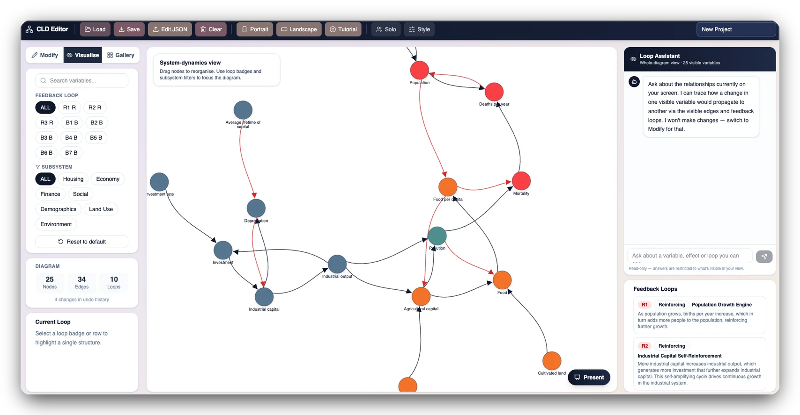

Research Team
Charlle Sy
FacultyProfessor of Practice, Systems Engineering
Cornell Duffield Engineering · De La Salle University
Charlle Sy is a Professor of Practice in the Systems Engineering Program at Cornell Duffield Engineering and a professor of industrial engineering at De La Salle University in Manila.
Her research sits where robust optimization meets systems thinking. She developed Target-Oriented Robust Optimization (TORO), an approach to decision-making under deep uncertainty that keeps the resulting problems computationally tractable, and has applied it to infrastructure and network planning across energy, production and water systems.
Within AI4C she stress-tests how the group handles uncertainty: how model assumptions are declared, how sensitive a recommendation is to them, and what a decision-maker should do when the evidence underneath is thin.
Focus areas
Projects

Heatscape NYC
Urban heat intervention planner — 10,081 populated cells scored on 43 indicators and matched to the cooling intervention their context supports.
Project overview
URIS Mapper
A causal diagram platform — build a loop map, let it find the reinforcing and balancing structures, and ask what a change would propagate to.
urismapper.com